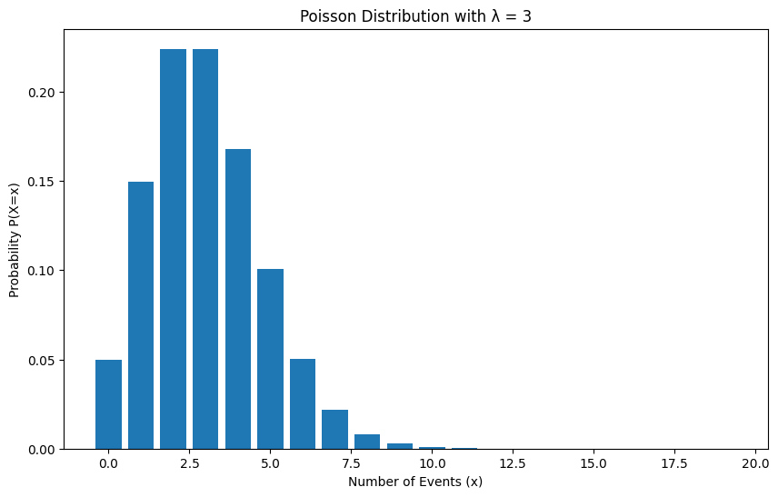
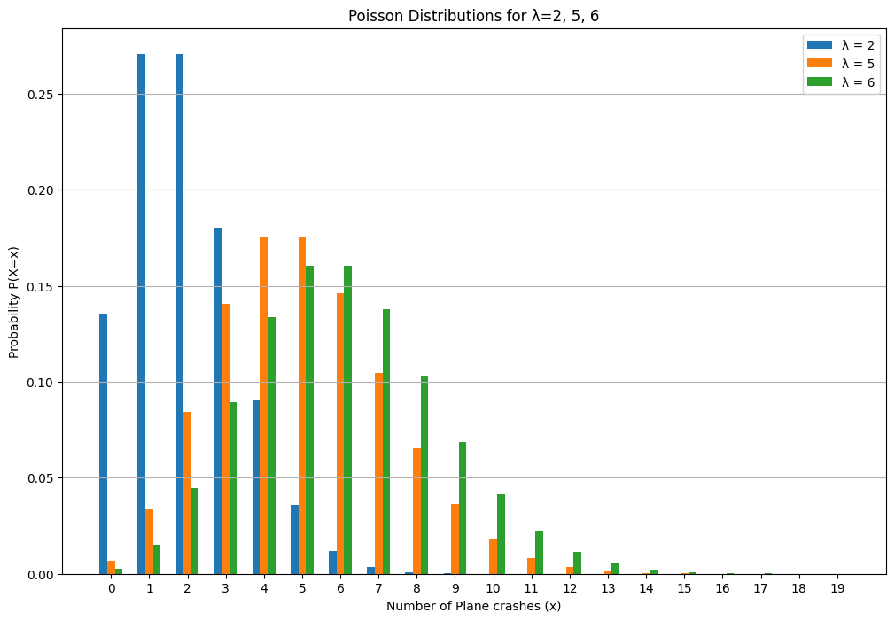
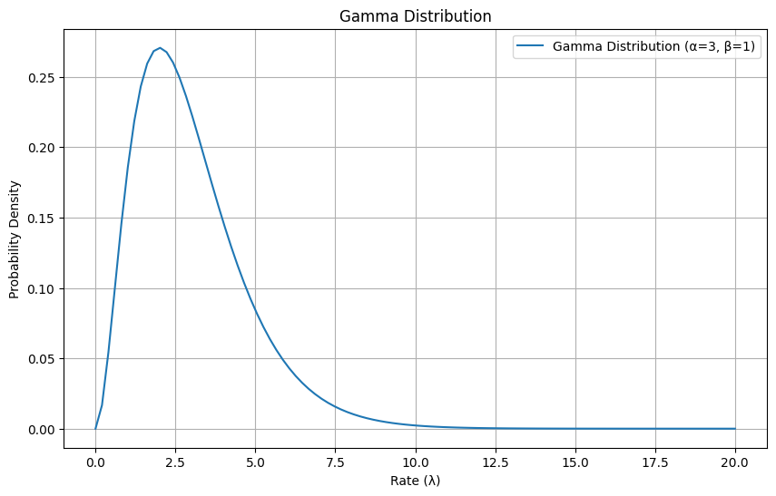
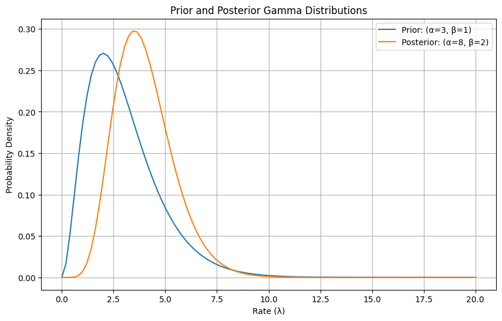
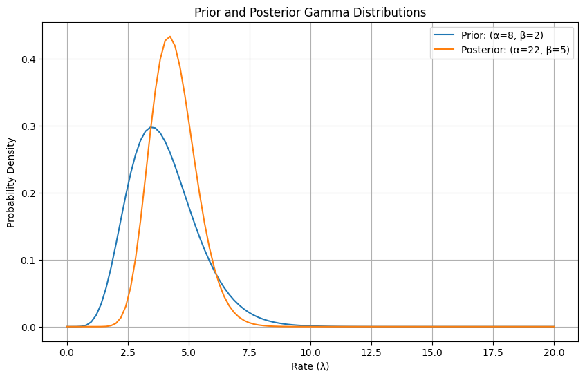

The Gamma-Poisson conjugate is another helpful shortcut we can use to calculate the posterior directly without having to integrate the denominator in Bayes theorem.
11.1 Poisson Distribution
The Poisson distribution models the probability of a specific number of events occurring within a fixed interval of time or space.
It is suitable for scenarios with rare, independent events occurring at a constant rate, such as plane crashes, traffic accidents, or insurance claims.
It is defined by a single parameter: the mean (λ) which is also equal to its variance.
The poisson distribution is given by the equation
\[P(X;λ) = \frac{λ^xe^{-λ}}{x!}\]
Code
import numpy as npimport matplotlib.pyplot as pltfrom scipy.stats import poisson# Define lambdamu =3# Range of possible outcomesx = np.arange(0, 20)# Calculate Poisson probabilities using poisson.pmfprobabilities = poisson.pmf(x, mu)# Create a bar plotplt.figure(figsize=(10, 6))plt.bar(x, probabilities)# Add title and labelsplt.title(f"Poisson Distribution with λ = {mu}")plt.xlabel("Number of Events (x)")plt.ylabel("Probability P(X=x)")# Display the plotplt.show()

11.1.1 Finding the average rate of plane crashes
The Poisson distribution is very interesting because it tells us that even rare events can occur with a surprisingly high frequency. For example, if the average rate of plane accidents were 3, it is not impossible to see 5, 6, or 7 accidents happen in any given year. While rare, it is not impossible as shown by the probability on the y-axis above.
Let’s see this with an example!
If average rate = 3, what is the probability of observing 5 crashes in a year?
\[P(X;λ) = \frac{λ^xe^{-λ}}{x!}\]
\[P(5;3) = \frac{3^5e^{-3}}{5!} = 0.1\]
Therefore, there’s a 10% chance of seeing 5 plane crashes in a year when the average rate = 3
Code
from scipy.stats import poisson# Define lambda and xlam =3x =5# Calculate probability using poisson.pmfprobability = poisson.pmf(x, lam)print(f"The probability of X={x} for a Poisson distribution with lambda={lam} is: {probability:.2f}")
The probability of X=5 for a Poisson distribution with lambda=3 is: 0.10
11.1.2 How is this related to Bayesian Statistics?
Let’s say you know an event - plane crash - follows a poisson distribution in any given year and you have also observed 5 plane crashes occur this year. However, you have no idea what the average rate of these rare events is (ie λ=?).
You have been asked what is the average rate of the event occurring?
Here λ=2,5,6,8 etc are all valid options. If you were to plot multiple poisson distributions with these lambda values you would notice they all contain 5 events occurring as a likely event.
This means we need to consider all possible values of lambda and then check each hypothesis with our observation of 5 crashes.
We want to know what is the likelihood of observing 5 events under each hypothesis for λ.
Code
import numpy as npimport matplotlib.pyplot as pltfrom scipy.stats import poisson# Define different lambda valueslambdas = [2, 5, 6]# Range of possible outcomesx = np.arange(0, 20)# Create a figure and axesplt.figure(figsize=(12, 8))# Plot Poisson distributions for each lambda using bar chartsbar_width =0.2# Adjust bar width as neededfor i, lam inenumerate(lambdas): probabilities = poisson.pmf(x, lam) plt.bar(x + i * bar_width, probabilities, bar_width, label=f'λ = {lam}')# Add title and labelsplt.title("Poisson Distributions for λ=2, 5, 6")plt.xlabel("Number of Plane crashes (x)")plt.ylabel("Probability P(X=x)")plt.legend()plt.xticks(x + (len(lambdas) -1) * bar_width /2, x) # Adjust x-axis ticksplt.grid(axis='y')# Display the plotplt.show()

Similar to previous situations, we need a prior that can be used with the poisson likelihood function to give us a posterior.
λ can be any value from 0 to infinity.
λ can be any real number greater than 0 and thus the x-axis must be continuous.
To find the correct value of lambda we can use a distribution called the gamma distribution as a prior.
We cannot use a Beta distribution like earlier because a beta distribution shows all probabilities where the x axis is limited from 0 to 1. Lambda can take any value, thus we need something else.
11.2 Gamma Distribution
A Gamma distribution is a continuous probability distribution defined for non-negative values (from 0 to infinity) on the x-axis, with its probability density function represented on the y-axis.
It is defined by two positive parameters, α (shape) and β (rate), and is commonly used as a prior distribution in Bayesian statistics, particularly for parameters that must be positive, such as rates in a Poisson distribution. \[g(x;α,β) = \frac{\beta^\alpha x^{\alpha-1}e^{-\beta x}}{\Gamma(\alpha)}\]
The function g takes inputs x, α and β.
The random variable X must assume values greater than or equal to 0, while α and β must be positive.
The function’s output represents the probability density of x given α and β.
11.3 How do we use Gamma distributions as priors?
Let’s assume, the average rate of plane crashes from a Poisson distribution has a mean of 3.
We can then use the following equation to find the α and β parameters for the Gamma priors: \[μ =\frac{α}{β}\]
Since we know mean = 3, we can choose α = 3 and β = 1 (choosing α and β is subjective as long as the mean equation is correct). We get a gamma distribution like so
Code
import numpy as npimport matplotlib.pyplot as pltfrom scipy.stats import gamma# Define shape (alpha) and scale (beta) parameters for the Gamma distributionalpha =3# Shape parameterbeta =1# Scale parameter (often denoted as theta or 1/beta in other contexts)# Generate x values (representing the rate lambda, which must be non-negative)x = np.linspace(0, 20, 100)# Calculate the probability density function (PDF) of the Gamma distributionpdf_values = gamma.pdf(x, a=alpha, scale=beta)# Create the plotplt.figure(figsize=(10, 6))plt.plot(x, pdf_values, label=f'Gamma Distribution (α={alpha}, β={beta})')# Add title and labelsplt.title("Gamma Distribution")plt.xlabel("Rate (λ)")plt.ylabel("Probability Density")plt.legend()plt.grid(True)# Display the plotplt.show()

We now observe 5 plane crashes in the real world. Using the earlier poisson distribution where λ = 3 , the likelihood of seeing 5 events is given by \[P(X;λ) = \frac{λ^xe^{-λ}}{x!}= \frac{3^5e^{-3}}{5!} = 0.1\] However, we want to find all possible values and determine the probability of observing 5 events in a year. For a continuous variable, Bayes’ theorem then becomes: \[P(λ|data) = \frac{P(data|λ) * P(λ)}{∫P(data|λ)*P(λ)dλ}\] where, P(λ) = prior
P(data|λ) = likelihood
The denominator here includes an integral which can be very difficult to solve.
Instead of solving this, we can use the Gamma-Poisson analytical shortcut to find the posterior. As stated earlier, the Gamma distribution is a conjugate prior to a Poisson distribution. When a Gamma prior is used with a Poisson likelihood, we get a Gamma posterior like so: \[α_{posterior} = α_{prior}+∑x_i\]\[β_{posterior} = β_{prior}+n \]
If we saw 5 events in the year then x=5 and n=1 \[α_{posterior} = 3+5 = 8\]\[β_{posterior} = 1+1 = 2\]
We can use these values to plot the gamma distribution of the posterior which includes all possible values of λ
Code
import numpy as npimport matplotlib.pyplot as pltfrom scipy.stats import gamma# Define shape (alpha) and rate (beta) parametersgamma_rate_params = [(3, 1), (8, 2)]# Convert rate (beta) to scale (theta or scale) for scipy.stats.gammagamma_scale_params = [(alpha, 1/beta) for alpha, beta in gamma_rate_params]# Generate x values (representing the rate lambda, which must be non-negative)x = np.linspace(0, 20, 100)# Create the plotplt.figure(figsize=(10, 6))# Plot each Gamma distribution using the scale parameterfor i, (alpha, scale_val) inenumerate(gamma_scale_params): pdf_values = gamma.pdf(x, a=alpha, scale=scale_val) label =f"Prior: (α={alpha}, β={1/scale_val:.0f})"if i ==0elsef"Posterior: (α={alpha}, β={1/scale_val:.0f})" plt.plot(x, pdf_values, label=label)# Add title and labelsplt.title("Prior and Posterior Gamma Distributions")plt.xlabel("Rate (λ)")plt.ylabel("Probability Density")plt.legend()plt.grid(True)# Display the plotplt.show()

You can see above, based on our observation we updated our prior to form a new posterior. We used the gamma-poisson shortcut to easily find the posterior.
As we get more data, this posterior becomes the new prior and we repeat the previous steps.
For eg: lets say we get the following data in the following 3 years:
year
no. of accidents
1
3
2
4
3
7
The posterior can then be updated to reflect these observations like so \[α_{posterior} = α_{prior}+∑x_i\]\[β_{posterior} = β_{prior}+n \]
import numpy as npimport matplotlib.pyplot as pltfrom scipy.stats import gamma# Define shape (alpha) and rate (beta) parametersgamma_rate_params = [(8, 2),(22,5)]# Convert rate (beta) to scale (theta or scale) for scipy.stats.gammagamma_scale_params = [(alpha, 1/beta) for alpha, beta in gamma_rate_params]# Generate x values (representing the rate lambda, which must be non-negative)x = np.linspace(0, 20, 100)# Create the plotplt.figure(figsize=(10, 6))# Plot each Gamma distribution using the scale parameterfor i, (alpha, scale_val) inenumerate(gamma_scale_params): pdf_values = gamma.pdf(x, a=alpha, scale=scale_val) label =f"Prior: (α={alpha}, β={1/scale_val:.0f})"if i ==0elsef"Posterior: (α={alpha}, β={1/scale_val:.0f})" plt.plot(x, pdf_values, label=label)# Add title and labelsplt.title("Prior and Posterior Gamma Distributions")plt.xlabel("Rate (λ)")plt.ylabel("Probability Density")plt.legend()plt.grid(True)# Display the plotplt.show()

11.4 Summary
Gamma - Poisson conjugate priors are another set of conjugates that allow us to quickly find the posterior without having to deal with the integral in Bayes theorem.
When dealing with a Poisson likelihood, using a Gamma distribution as a prior provides a convenient “shortcut” because the resulting posterior distribution is also a Gamma distribution.
This simplification of the posterior avoids calculating complex integrals in the denominator.
By starting with a Gamma prior that reflects our initial beliefs about the rate parameter (e.g., the average rate of plane crashes), and then updating it with observed data from a Poisson process (e.g., the number of observed plane crashes), we directly obtain a Gamma posterior that captures all possible values of the rate parameter and their probabilities.